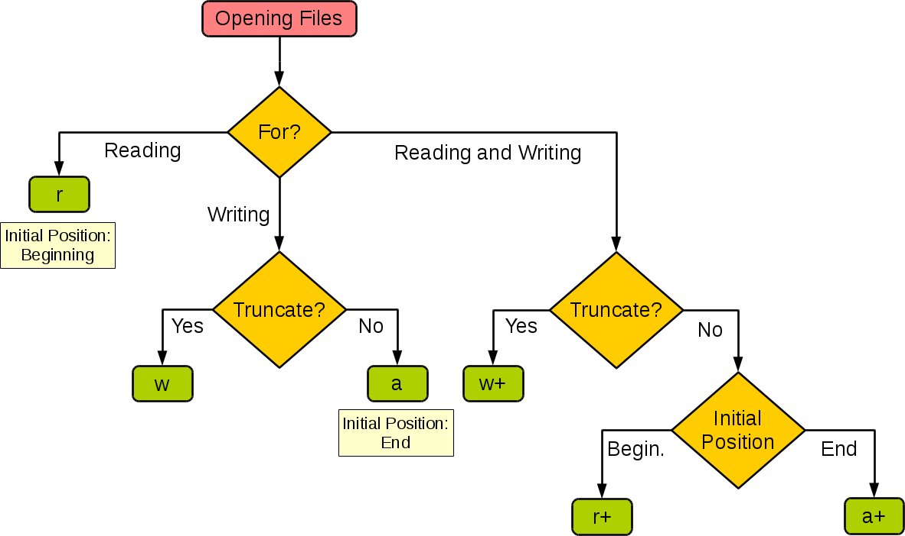

Práce se soubory I
by Jiří Znamenáček
Úvod
Se soubory v Python'u se na první pohled pracuje velmi podobně, jako kdekoliv jinde – soubor z daného umístění otevřeme, pracujeme s jeho obsahem a na konci ho zase spořádaně uzavřeme:
f = open('cesta/k/souboru', mode='r', encoding='utf-8')
...
f.close()
Výchozí mód je r (tedy textový soubor otevřený pro čtení) a protože je pozičně na druhém místě, zdánlivě by pro textové soubory tedy stačilo psát open('CESTA', 'r') nebo rovnou open('CESTA'). Problém je v tom, že encoding je až třetí pojmenovaný parametr (druhým je nastavení mezipaměti buffering) a výchozí kódování je závislé na systému, takže open() bez parametru encoding je v podstatě nepoužitelný (rozhodně nepřenosný).
Operační kontext „with“
Protože cestou se může stát mnoho nepředvídaného, je dobré se pojistit a soubor pro případ takových nenadálých událostí stejně pěkně zavřít.
Po staru to člověk dělal soustavou bloků try-finally, ale v Python'u 3 je mnohem lepší použít příkaz with pro vytvoření příslušného operačního kontextu (runtime context):
with open('cesta/k/souboru', encoding='utf-8') as f:
BLOK
Uvnitř bloku máme pod identifikátorem f k dispozici otevřený stream (aneb „proud dat“) a můžeme s ním úplně normálně pracovat. Jakmile kód v bloku proběhne, ať už úspěšně nebo neúspěšně, tak je stream automaticky uzavřen (a nemusíme se o to tudíž starat sami).
__enter__(), při opuštění bloku pak __exit__(). Blíže viz B.11.
Vlastnosti proudu
Otevřený soubor (tedy stream, resp. „proud dat“; zde pro případ textového souboru) má mnoho zajímavých vlastností:
>>> f = open('cestina.txt', encoding='utf-8')
>>> f
<_io.TextIOWrapper name='cestina.txt' encoding='utf-8'>
>>> dir(f)
['_CHUNK_SIZE', '__class__', '__delattr__', '__doc__', '__enter__', '__eq__',
'__exit__', '__format__', '__ge__', '__getattribute__', '__gt__', '__hash__',
'__init__', '__iter__', '__le__', '__lt__', '__ne__', '__new__', '__next__',
'__reduce__', '__reduce_ex__', '__repr__', '__setattr__', '__sizeof__',
'__str__', '__subclasshook__', '_checkClosed', '_checkReadable',
'_checkSeekable', '_checkWritable', 'buffer', 'close', 'closed', 'detach',
'encoding', 'errors', 'fileno', 'flush', 'isatty', 'line_buffering', 'name',
'newlines', 'read', 'readable', 'readline', 'readlines', 'seek', 'seekable',
'tell', 'truncate', 'writable', 'write', 'writelines']
Na mnohé o souboru se můžeme ptát:
>>> f.name # jméno souboru 'cestina.txt' >>> f.encoding # kódování souboru 'utf-8' >>> f.mode # způsob přístupu k souboru (zde r = „pouze pro čtení“) 'r' >>> f.readable() # Je proud možno číst? True >>> f.writable() # Je do souboru možno zapisovat? False # Podporuje proud náhodný přístup? Aneb.. # ..Je možno použít metody seek(), tell() a truncate()? >>> f.seekable() True
Všimněte si, že (dosud) otevřený soubor se patřičně hlásí jako nezavřený a naopak:
>>> f.closed False >>> f.close() >>> f.closed True
Konstruktor „open()“
Plný konstruktor pro otevření souboru je nepřekvapivě dosti komplikovaný:
open(
SOUBOR
mode='r',
buffering=-1,
encoding=None,
errors=None,
newline=None,
closefd=True,
opener=None
)
Teoreticky jediným povinným parametrem je sice pouze cesta k souboru (která možná trošku překvapivě nemusí být pouze řetězcem), se kterým chceme pracovat, ale jelikož výchozím módem je textový pro čtení, máme problém s přenositelností kódování*.
Další parametry pak jsou:
- mode – způsob otevření souboru pro práci s ním;
- buffering – nastavení práce s mezipamětí;
-
encoding – algoritmus kódování textového souboru;
📝Není-li zadáno, zjistí se aktuální automaticky pomocí
locale.getpreferredencoding(False). - errors – varianta řešení chyb při dekódování textových souborů;
- newline – velmi zajímavý parametr umožňující změnu chování vůči koncům řádek v textových souborech.
Parametr closefd se může uplatnit v situaci, kdy cesta k souboru není zadána řetězcem, a parametr opener pak umožňuje i použít vlastní volatelný objekt pro otevření požadovaného cíle. Pro obé konzultujte prosím přímo oficiální dokumentaci.
Módy otevření souboru I
Textový soubor (volitelně identifikovaný příznakem t) můžeme otevřít v několika módech:
- r – soubor je otevřen pouze pro čtení
- w – soubor je otevřen pro zápis (již existující neprázdný soubor bude smazán)
-
x – soubor je exkluzivně vytvořen (tzn. že přístup selže s výjimkou
FileExistsError, pokud soubor již existuje) a otevřen pro zápis - a – soubor je otevřen pro přidávání (zapsaná data budou přidána na konec)
- r+ – soubor je otevřen pro čtení i zápis (čili musí již existovat a popisovač je nastaven na jeho začátek)
- w+ – soubor je otevřen pro čtení i zápis (již existující neprázdný soubor bude smazán)
-
a+ – soubor je otevřen pro čtení i přidávání (přitom čtecí a zapisovací ukazatel jsou na sobě nezávislé; sice na začátku míří oba na konec souboru, ale čtecí můžete např. pomocí
seek()přesunout, zatímco zápis probíhá vždy na konci)
tr, to jest textový soubor, pouze čtení.
Pro případ binárního souboru kombinujeme výše uvedené módy s příznakem b (tedy např. br otevře binární soubor pro čtení).
Módy otevření souboru II
Nejen mně přijdou módy otevření souboru poněkud zmatené. Andrzej Pronobis / Renato Byrro vytvořili rozhodovací diagram, který – pokud jsem se úplně neztratil v testování, což by mě ani trochu nepřekvapilo ^_^ – odpovídá realitě a je docela přehledný:

PS: Mód x patří do větve writing – je to tak trochu „nafintěné“ w. Mód x+ můžete také použít, ale vzhledem k povaze věci se chová úplně stejně jako x.
Čtení z proudu
Z otevřeného proudu (streamu) je možno číst data několika různými způsoby. Základní představuje metoda read():
-
načtení celého proudu najednou:
content = stream.read()📝Pro binární stream je voláníread()bez parametrů (resp. s-1) v podstatě ekvivalentní zavolání metodyreadall(). -
načtení daného počtu znaků (pro případ textového souboru) nebo bajtů (pro případ binárního souboru):
part = stream.read(ZNAKŮ|BAJTŮ)
Zápis do proudu
Podobně jako u čtení z proudu máme pro zápis k dispozici především základní metodu:
-
stream.write(ŘETĚZEC|BAJTY)
Tato metoda provede zapsání daných znaků (pro případ textového souboru) nebo bajtů (pro případ binárního souboru):
# otevřme soubor v textovém módu a kódování UTF-8 pro zápis (vlastně „přepis“)
>>> f = open('test', 'w', encoding='utf-8')
# metoda write() vrací počet zapsaných znaků (jsme v módu 't')
>>> f.write('Ahoj, světe!')
12
>>> f.write('Jak se máš?')
11
>>> f.close()
# podívejme se, co jsme zapsali
>>> f = open('test', 'r', encoding='utf-8')
>>> f.read()
'Ahoj, světe!Jak se máš?'
>>> f.close()
Znaky vs bajty I
Základní třídou pro vstup a výstup je třída IOBase. Z ní dědí jak třída TextIOBase pro práci s textovými soubory, tak třída RawIOBase pro práci se soubory binárními.
Přitom mezi textovými a binárními soubory jsou dva, a to zcela zásadní, rozdíly:
- Binární soubory jsou čteny (a zapisovány) po bajtech, textové jsou zpracovávány po znacích (přičemž jeden znak zabírá podle použitého kódování místo jednoho či několika bajtů).
-
V textových souborech je automaticky prováděna konverze konců řádků různých platforem (
\nna Unixu a MacOS X+,\r\nna Windows,\rna MacOS 9-) na jednotné pracovní\n(konverze je samozřejmě obousměrná), v binárních pochopitelně nikoli.
Znaky vs bajty II
Pamatovat na rozdíl mezi bajty a znaky je přitom skutečně důležité:
# otevřme textový soubor v kódování UTF-8
>>> f = open('japonstina.txt', encoding='utf-8')
>>> f.tell() # s čertvě otevřeným souborem stojíme na začátku proudu
0
>>> f.read() # načtěmež celý proud
'狼.cz'
>>> f.tell() # jsme na jeho konci – v bajtech je delší, než ve znacích!
6
>>> f.seek(0) # vraťme se na začátek
0
>>> f.tell()
0
>>> f.read(1) # přečtěmež jeden znak..
'狼'
>>> f.tell() # ..ale posunuli jsme se o tři bajty dále!
3
>>> f.read(1) # '.' je ve spodní polovině ASCII-tabulky, takže načtení
# jednoho znaku..
'.'
>>> f.tell() # ..nás posune pouze o jeden bajt dále
4
>>> f.close()
Znaky vs bajty III
Asi už tušíte, do jakých nesnází se dostanete, pokud se pokusíte na textovém proudu posouvat začátky čtení dalšího znaku do nesmyslných míst:
>>> f = open('japonstina.txt', encoding='utf-8')
>>> f.tell()
0
>>> f.seek(1) # posuňme se o jeden bajt po streamu dopředu..
1
>>> f.tell()
1
>>> f.read(1) # ..a pokusme se nyní načíst jeden znak
Traceback (most recent call last):
File "<stdin>", line 1, in <module>
File "/usr/lib/python3.1/codecs.py", line 300, in decode
(result, consumed) = self._buffer_decode(data, self.errors, final)
UnicodeDecodeError: 'utf8' codec can't decode byte 0x8b in position 0:
unexpected code byte
Kdybyste si neměli pamatovat nic jiného: Nikdy nemíchejte binární a textové proudy dohromady! ^_^
Mezipaměť („buffer“) I
Zakončeme náš úvod do práce se soubory jednou velmi důležitou poznámkou:
Z důvodů vnitřní implementace a optimalizace práce s proudy (stream) probíhá veškerá komunikace přes tzv. mezipaměť (buffer), odkud jsou data přesouvána až podle požadavků systému, není-li programem vynuceno jinak.
V praxi to například v případě zápisu znamená, že data nemusí být před vyžádaným uzavřením proudu vůbec skutečně zapsána!
Někdy (podle způsobu práce i často) se nám může hodit vnutit systému zápis připravených dat dříve, než to zařídí uzavření proudu zavoláním jeho metody close() nebo ukončením práce v bloku with. A právě tuto činnost má na starosti metoda proudu flush().
sys.stdout, což je – také ve výchozím nastavení – právě konzole. Vynucení výpisu dosud nabafrovaných dat pak zařídí podle verze Python'u buď nastavení stejnojmenného parametru přímo na funkci print() (Python 3.3+)..
print(…, flush=True)
..nebo zavolání metody flush() (pro Python 3.2-):
import sys
print(…)
sys.stdout.flush()
Mezipaměť („buffer“) II
Jak jsme zmiňovali už na prvním slajdu, historická pozice kódování textového souboru až jako třetího pojmenovaného parametru plus neexistující konsenzus pro výchozí kódování nám ztěžují práci se soubory. A tím parametrem, kvůli kterému musíme vždy vypisovat encoding= je právě parametr řídící způsob práce s mezipamětí: buffering
Jeho možná nastavení jsou následující:
- 0 – v binárním módu vypíná bafrování
- 1 – v textovém módu přepíná bafr na řádkový
- >1 – nastavuje příslušnou velikost bafru
Není-li atribut buffering= uveden (a má tak výchozí hodnotu -1), nastoupí heuristika:
-
u „interaktivních“ textových souborů (tedy těch, pro něž metoda streamu
isatty()vracíTrue) je bafrování nastaveno na řádkové; - u binárních a ostatních textových souborů se Python pokusí zjistit velikost systémových bloků (typicky skončí s číslem 4096 nebo 8192).